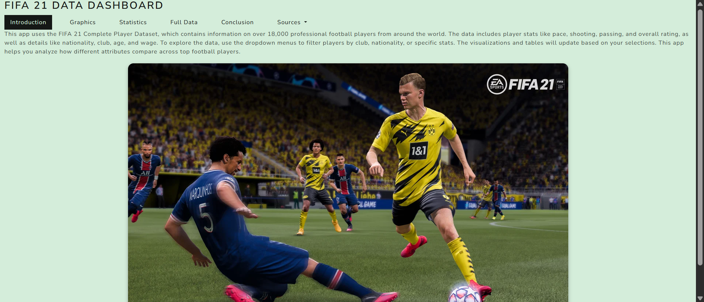
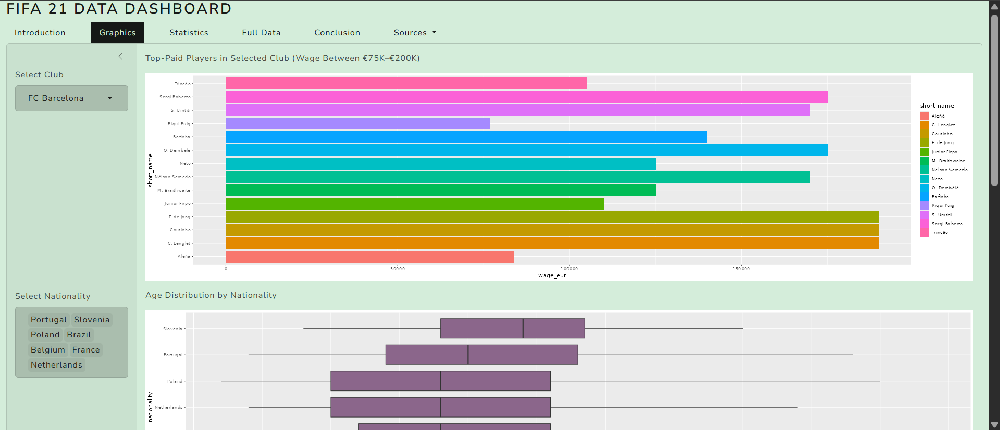
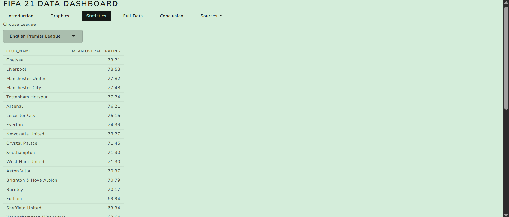

// project_01
FIFA 21 Data Dashboard
UC Berkeley ATDP: Data Science Lab with R | Summer 2025
About the Project
This interactive data dashboard was built in R and R Shiny as the final project for the UC Berkeley ATDP Data Science Lab. It analyzes the FIFA 21 Complete Player Dataset from Kaggle, which contains detailed statistics on over 18,000 professional football players from around the world.
The app allows users to filter players by club, nationality, and individual stats, and explore a suite of visualizations: bar charts of top-paid players, age distribution box plots by nationality, histograms of physical attributes, scatter plots of top performers, and a linear regression model exploring the relationship between player wages and overall rating (R² = 0.371). The project demonstrates skills in EDA, data cleaning, statistical analysis, and interactive data visualization. Dataset sourced from Kaggle.
Skills & Tools
What I Learned
Working with the FIFA 21 dataset taught me how to explore and visualize real-world sports data at scale, and how thoughtful exploratory analysis can surface surprising patterns, such as how highly-rated players tend to excel simultaneously across multiple skill categories, not just one. I discovered that player wages have a moderate but meaningful correlation with overall rating (R² = 0.371), suggesting that clubs do reward player quality, but that many other factors influence compensation.
Building this Shiny app deepened my understanding of data visualization, statistical inference, and how interactive tools can make data exploration accessible to anyone, not just statisticians. Most importantly, this project taught me how data can tell a story in sports: the numbers behind the beautiful game are just as compelling as the game itself.


